2016年2月下旬，Docker发布了企业级容器管理和服务部署的整体解决方案平台－Docker DataCenter，简称DDC。 探其结构，除了底层的Docrker Engine本身以外，DDC主要由DTR（Docker Trusted Registry）和UCP（Universal Control Plane）两大组件组成。 DDC在Docker官网地址是：http://www.docker.com/products/docker-datacenter
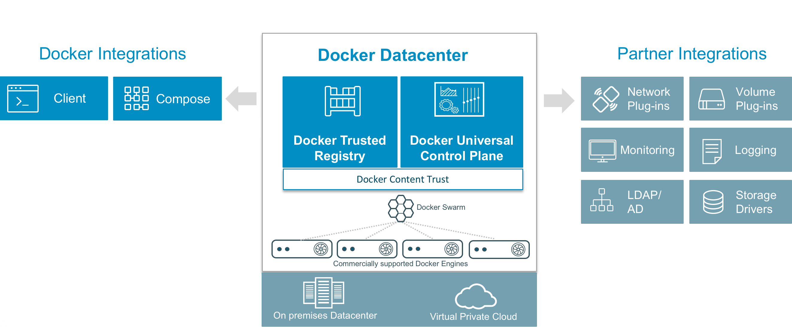
Docker本身是开源技术，但DDC人家可是闭源收费的！目前一共有两大类收费方式：Docker DataCenter 或 Docker Cloud。 “DataCenter”方式为您提供DDC软件下载，收取License费用和服务费用；“Cloud”方式其实是Docker为您在线提供了与标准公有云类似的公有CaaS（Container as a Service）服务，按用量和时间计费。 为了防止图片太多、文章太长，这里就不截图了，感兴趣的同学，可以在这里了解相关信息：http://www.docker.com/pricing
当然，Docker目前在第一类收费方式中也给我们提供了免费下载试用30天的链接，这也就给我们安装试用DDC提供了机会。 免费试用注册地址如下：https://hub.docker.com/enterprise/trial/。 注册时，需要输入姓名、公司、职位、公司邮箱、电话号码、所在国家等信息：
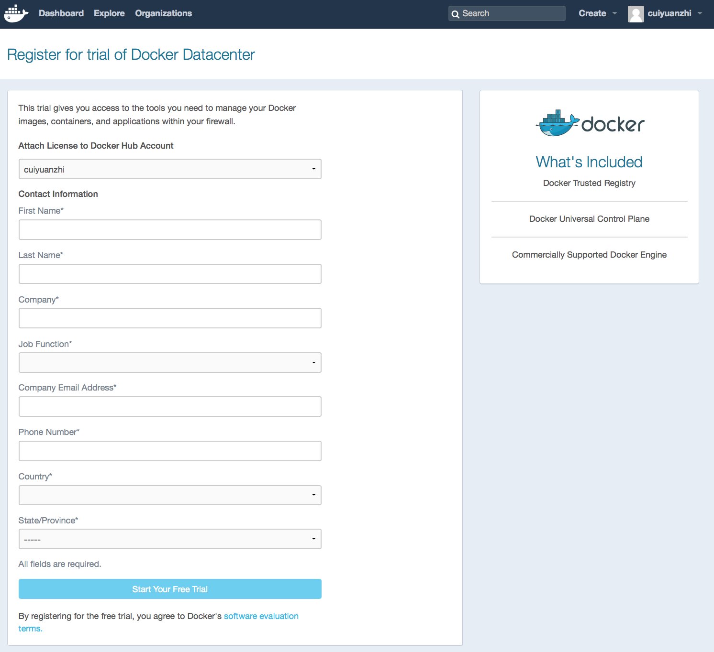
细心的同学这时候一定已经发现了，Docker在右上角正式告诉你，DCC其实一共是由DTR、UCP和Commercially Supported Docker Engine（CS Engine）三部分组成的，开源版本的Docker Engine在第一步就这样被无情的宣布了出局。。。
所以，正确的DDC逻辑架构图，画风应该是这样的：
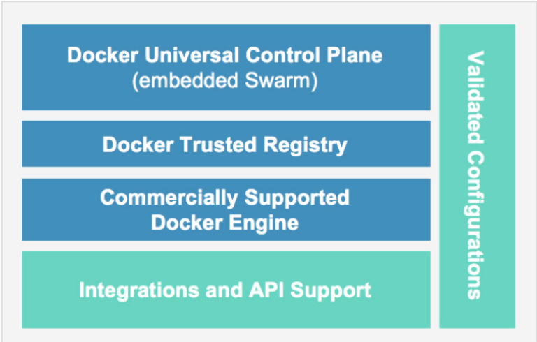
确认注册成功后，会收到Docker的祝贺邮件，同时会跳转到下边的页面：https://hub.docker.com/enterprise/trial/success/?namespace=yourname&step=1。
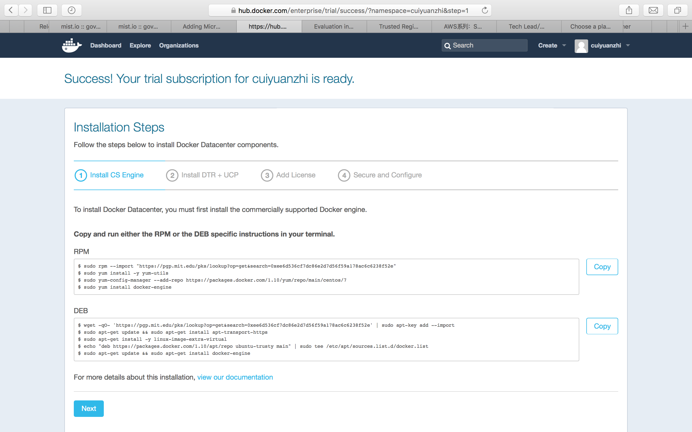
终于，可以正式开始安装了！
第一步，安装Docker CS Engine。
随便在东网云cloud.neunn.com找了一台Ubuntu 14.04的VM，开动！
因为是Ubuntu系统，所以使用下边的DEB安装脚本：
$ wget -qO- 'https://pgp.mit.edu/pks/lookup?op=get&search=0xee6d536cf7dc86e2d7d56f59a178ac6c6238f52e' | sudo apt-key add --import
$ sudo apt-get update && sudo apt-get install apt-transport-https
$ sudo apt-get install -y linux-image-extra-virtual
$ echo "deb https://packages.docker.com/1.10/apt/repo ubuntu-trusty main" | sudo tee /etc/apt/sources.list.d/docker.list
$ sudo apt-get update && sudo apt-get install docker-engine
另外，RPM的安装脚本是：
$ sudo rpm --import "https://pgp.mit.edu/pks/lookup?op=get&search=0xee6d536cf7dc86e2d7d56f59a178ac6c6238f52e"
$ sudo yum install -y yum-utils
$ sudo yum-config-manager --add-repo https://packages.docker.com/1.10/yum/repo/main/centos/7
$sudo yum install docker-engine
整个过程大概就是：下载密钥、安装必要的依赖包、安装CS Engine等等，按照提示一步步往下走就可以了，基本不会遇到问题。
第二步，安装DTR＋UCP。
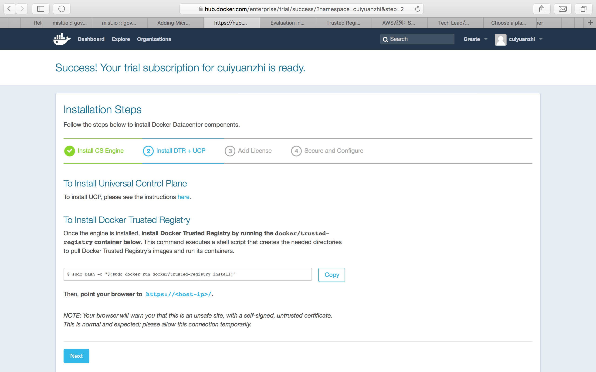
UCP有单独的安装文档，我们先说DTR。DTR的安装脚本就一句，如下：
$ sudo bash -c "$(sudo docker run docker/trusted-registry install)
注意，这条看似简单的命令，在天朝可能要有坑了：首先，下载镜像，中途可能会出错，不过这个好办，多来几次应该总会成功；再次报错，错误信息是：
“Error response from daemon: Get https://registry-1.docker.io/v2/docker/trusted-registry/manifests/1.4.3:
Get https://auth.docker.io/token?scope=repository%3Adocker%2Ftrusted-registry%3Apull&service=registry.docker.io:
net/http: TLS handshake timeout”
这个应该怎么处理。。。
看到了“auth.xxxx.xx”，是不是要登录啊，试试也不要钱，只能这样了：
ubuntu@ubuntu1404-01:~$ docker login
Username: cuiyuanzhi
Password:
Email: xxx@GMAIL.COM
Error response from daemon: Server Error: Post https://index.docker.io/v1/users/: net/http: TLS handshake timeout
ubuntu@ubuntu1404-01:~$ ping index.docker.io
PING us-east-1-elbio-rm5bon1qaeo4-623296237.us-east-1.elb.amazonaws.com (52.0.10.162) 56(84) bytes of data.
^C
--- us-east-1-elbio-rm5bon1qaeo4-623296237.us-east-1.elb.amazonaws.com ping statistics ---
v141 packets transmitted, 0 received, 100% packet loss, time 140209ms
ubuntu@ubuntu1404-01:~$
结果又有新错误，Ping目标地址都不通啊。。。
还好可以Shadowsocks，直接参考StackOverFlow的建议再搞：
ubuntu@ubuntu1404-01:~$ curl -v https://index.docker.io:443
* Rebuilt URL to: https://index.docker.io:443/
* Hostname was NOT found in DNS cache
* Trying 54.164.250.255...
* Connected to index.docker.io (54.164.250.255) port 443 (#0)
* successfully set certificate verify locations:
* CAfile: none
CApath: /etc/ssl/certs
* SSLv3, TLS handshake, Client hello (1):
* SSLv3, TLS handshake, Server hello (2):
* SSLv3, TLS handshake, CERT (11):
* SSLv3, TLS handshake, Server key exchange (12):
* SSLv3, TLS handshake, Server finished (14):
* SSLv3, TLS handshake, Client key exchange (16):
* SSLv3, TLS change cipher, Client hello (1):
* SSLv3, TLS handshake, Finished (20):
* SSLv3, TLS change cipher, Client hello (1):
* SSLv3, TLS handshake, Finished (20):
* SSL connection using ECDHE-RSA-AES128-GCM-SHA256
* Server certificate:
* subject: OU=GT98568428; OU=See www.rapidssl.com/resources/cps (c)15; OU=Domain Control Validated - RapidSSL(R); CN=*.docker.io
* start date: 2015-03-19 17:34:32 GMT
* expire date: 2018-04-21 01:51:52 GMT
* subjectAltName: index.docker.io matched
* issuer: C=US; O=GeoTrust Inc.; CN=RapidSSL SHA256 CA - G3
* SSL certificate verify ok.
> GET / HTTP/1.1
> User-Agent: curl/7.35.0
> Host: index.docker.io
> Accept: */*
>
< HTTP/1.1 301 MOVED PERMANENTLY
* Server nginx/1.6.2 is not blacklisted
< Server: nginx/1.6.2
< Date: Mon, 29 Feb 2016 02:23:25 GMT
< Content-Type: text/html; charset=utf-8
< Transfer-Encoding: chunked
< X-Frame-Options: SAMEORIGIN
< Location: https://registry.hub.docker.com/
< Strict-Transport-Security: max-age=31536000
<
* Connection #0 to host index.docker.io left intact
ubuntu@ubuntu1404-01:~$ docker login
Username: cuiyuanzhi
Password:
Email: cuiyuanzhi@gmail.com
WARNING: login credentials saved in /home/ubuntu/.docker/config.json
Login Succeeded
ubuntu@ubuntu1404-01:~$
登录成了，再次执行命令：
ubuntu@ubuntu1404-01:~$ sudo bash -c "$(sudo docker run docker/trusted-registry install)"
Checking for required image: docker/trusted-registry-distribution:v2.2.1
Checking for required image: postgres:9.4.1
Checking for required image: docker/trusted-registry:1.4.3
Checking for required image: docker/trusted-registry-admin-server:1.4.3
1.4.3: Pulling from docker/trusted-registry-admin-server
9943fffae777: Already exists
fb15e825cb68: Already exists
b9583a207297: Already exists
a3ed95caeb02: Already exists
ad81ef6474b3: Already exists
a1d5b287aebf: Pull complete
Digest: sha256:9b4b672e4966cc75efba99cac0b6fa21d16060632f20555edec5fa97c9ce1296
Status: Image is up to date for docker/trusted-registry-admin-server:1.4.3
Checking for required image: docker/trusted-registry-log-aggregator:1.4.3
Error response from daemon: Get https://registry-1.docker.io/v2/docker/trusted-registry-log-aggregator/manifests/1.4.3: Get https://auth.docker.io/token?account=cuiyuanzhi&scope=repository%3Adocker%2Ftrusted-registry-log-aggregator%3Apull&service=registry.docker.io: net/http: TLS handshake timeout
ubuntu@ubuntu1404-01:~$
再次报错。。。没事，还是“TLS handshake timeout”，再来一次“curl –v”：
ubuntu@ubuntu1404-01:~$ curl -v https://auth.docker.io:443
再次执行命令，开始各种下载镜像，正好去开个会。也不知过了多久，安装成功了。
Bringing up docker_trusted_registry_registry_index.
Creating container docker_trusted_registry_registry_index with docker daemon unix:///var/run/docker.sock
Starting container docker_trusted_registry_registry_index with docker daemon unix:///var/run/docker.sock
Bringing up docker_trusted_registry_load_balancer.
Creating container docker_trusted_registry_load_balancer with docker daemon unix:///var/run/docker.sock
Starting container docker_trusted_registry_load_balancer with docker daemon unix:///var/run/docker.sock
Bringing up docker_trusted_registry_admin_server.
Creating container docker_trusted_registry_admin_server with docker daemon unix:///var/run/docker.sock
Starting container docker_trusted_registry_admin_server with docker daemon unix:///var/run/docker.sock
Bringing up docker_trusted_registry_log_aggregator.
Creating container docker_trusted_registry_log_aggregator with docker daemon unix:///var/run/docker.sock
Starting container docker_trusted_registry_log_aggregator with docker daemon unix:///var/run/docker.sock
Bringing up docker_trusted_registry_auth_server.
Creating container docker_trusted_registry_auth_server with docker daemon unix:///var/run/docker.sock
Starting container docker_trusted_registry_auth_server with docker daemon unix:///var/run/docker.sock
Bringing up docker_trusted_registry_postgres.
Creating container docker_trusted_registry_postgres with docker daemon unix:///var/run/docker.sock
Container already exists for daemon at unix:///var/run/docker.sock: docker_trusted_registry_postgres
Starting container docker_trusted_registry_postgres with docker daemon unix:///var/run/docker.sock
Container docker_trusted_registry_postgres is already running for daemon at unix:///var/run/docker.sock
ubuntu@ubuntu1404-01:~$
该启的东西应该是都启来了，根据安装页面提示，去DTR管理界面看一眼吧。结果，画风竟然是这样的。。。
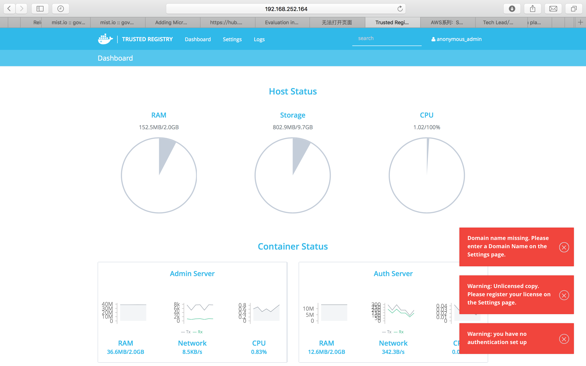
右边报了几个小红错，应该分别是“无域名”、“无licenese”和“未设置认证”导致的。决定暂时不用管它，应该不会影响使用。
继续，开始安装UCP。
UCP是DDC的主角，有好几种安装方式，为了图快，选择了Mac OS X下的Virtual Box VM安装。更高端的生产环境安装方式，有时间再尝试吧。UCP的安装指南地址是： https://docs.docker.com/ucp/evaluation-install
在Mac OS X下使用Docker需要安装Docker Toolbox，如果安装这里就不再赘述了，它的下载地址是： https://www.docker.com/products/docker-toolbox
Docker Toolbox搞定后，正式开工：
用docker-machine查看所有当前vm实例：
$ docker-machine ls
NAME ACTIVE DRIVER STATE URL SWARM DOCKER ERRORS
default - virtualbox Stopped Unknown
创建名字为node1的VM：
$ docker-machine create -d virtualbox \
--virtualbox-memory "2000" \
--virtualbox-disk-size "5000" node1
Running pre-create checks...
Creating machine...
(node1) Copying /Users/mary/.docker/machine/cache/boot2docker.iso to /Users/mary/.docker/machine/machines/node1/boot2docker.iso...
(node1) Creating VirtualBox VM...
(node1) Creating SSH key...
(node1) Starting the VM...
(node1) Waiting for an IP...
Waiting for machine to be running, this may take a few minutes...
Machine is running, waiting for SSH to be available...
Detecting operating system of created instance...
Detecting the provisioner...
Provisioning with boot2docker...
Copying certs to the local machine directory...
Copying certs to the remote machine...
Setting Docker configuration on the remote daemon...
C>hecking connection to Docker...
Docker is up and running!
To see how to connect Docker to this machine, run: docker-machine env node1
创建名字为node2的VM：
$ docker-machine create -d virtualbox \
--virtualbox-memory "2000" node2
查看是否两个node都创建成功：
$ docker-machine ls
NAME ACTIVE DRIVER STATE URL SWARM DOCKER ERRORS
default - virtualbox Stopped Unknown
dev - virtualbox Error Unknown machine does not exist
node1 - virtualbox Running tcp://192.168.99.100:2376 v1.10.2
node2 - virtualbox Running tcp://192.168.99.101:2376 v1.10.2
继续，将node1安装为UCP Controller。
首先设置node1环境变量：
a．
$ docker-machine env node1
export DOCKER_TLS_VERIFY="1"
export DOCKER_HOST="tcp://192.168.99.103:2376"
export DOCKER_CERT_PATH="/Users/mary/.docker/machine/machines/node1"
export DOCKER_MACHINE_NAME="node1"
# Run this command to configure your shell:
# eval $(docker-machine env node1)
b．
$ eval $(docker-machine env node1)
c．
$ docker-machine ls
NAME ACTIVE DRIVER STATE URL SWARM DOCKER ERRORS
node1 * virtualbox Running tcp://192.168.99.100:2376 v1.10.2
node2 - virtualbox Running tcp://192.168.99.101:2376 v1.10.2
然后用UCP tool开始交互式安装：
$ docker run --rm -it \
-v /var/run/docker.sock:/var/run/docker.sock \
--name ucp docker/ucp install -i \
--swarm-port 3376 --host-address $(docker-machine ip node1)
Unable to find image 'docker/ucp:latest' locally
latest: Pulling from docker/ucp
0198ad4008dc: Pull complete
291084ae72f3: Pull complete
Digest: sha256:28b6c9640e5af0caf2b2acbbbfd7c07bdbec6b170f04cbaeea7bb4909d74898d
INFO[0000] Verifying your system is compatible with UCP
输入默认密码：
Please choose your initial UCP admin password:
Confirm your initial password:
INFO[0016] Pulling required images... (this may take a while)
中途还会提示一些信息，但最后，安装很快成功了。
INFO[0001] Generating UCP Cluster Root CA
INFO[0014] Generating UCP Client Root CA
INFO[0017] Deploying UCP Containers
INFO[0024] UCP instance ID: LTP6:RHXO:4YPE:OPXL:3UAI:JK37:CWXM:APTW:5KP2:PEF3:CCDD:YL5B
INFO[0024] UCP Server SSL: SHA1 Fingerprint=86:85:49:A8:A1:30:65:EA:B9:7A:DE:65:82:8B:E7:04:9F:33:DB:CF
INFO[0024] Login as "admin"/(your admin password) to UCP at https://192.168.99.100:443
bash-3.2$
登入图形界面：
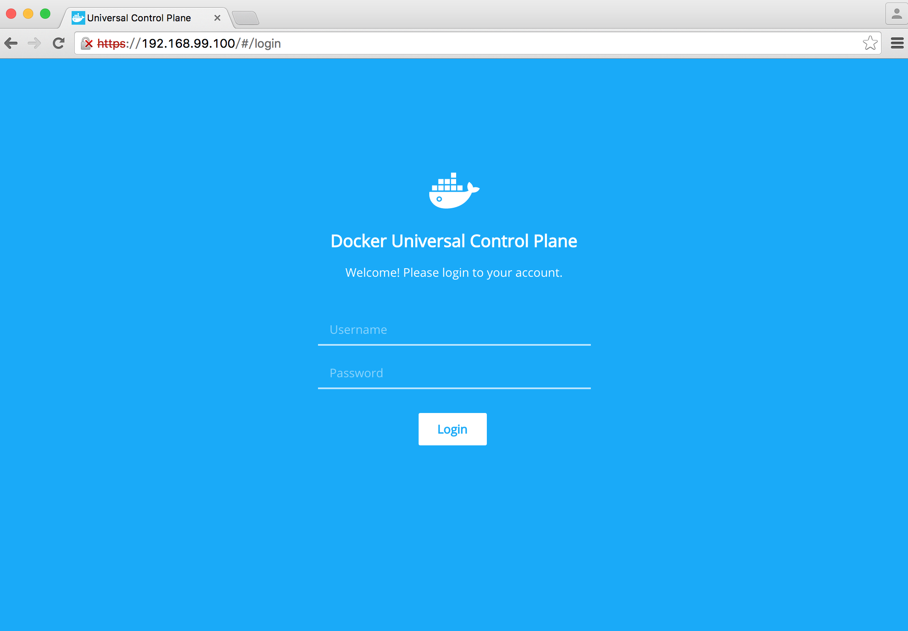
上传License：
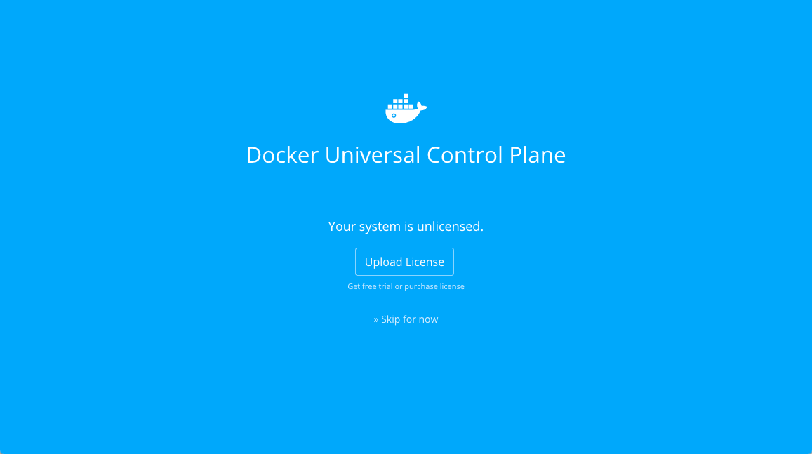
License是在DDC试用的注册第三步下载的：
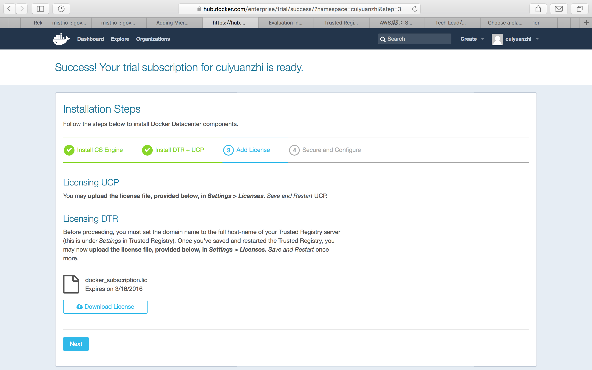
好了，导入成功后，界面大概是这样的：
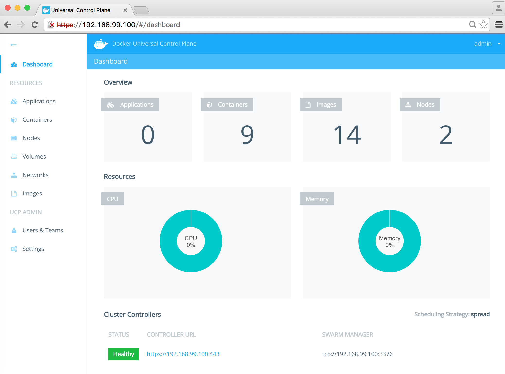
这个时候，其实右上角的Nodes应该为1，只不过我当时忘记抓图了后补的所以。。。
好了，添加node2，还是先整环境变量：
a．
$ docker-machine env node2
export DOCKER_TLS_VERIFY="1"
export DOCKER_HOST="tcp://192.168.99.101:2376"
export DOCKER_CERT_PATH="/Users/mary/.docker/machine/machines/node2"
export DOCKER_MACHINE_NAME="node2"
# Run this command to configure your shell:
# eval $(docker-machine env node2)
b．
$ eval $(docker-machine env node2)
开始添加node2：
$ docker run --rm -it \
-v /var/run/docker.sock:/var/run/docker.sock \
--name ucp docker/ucp join -i \
--host-address $(docker-machine ip node2)
输入安装好的UCP Server地址：
Status: Downloaded newer image for docker/ucp:latest
Please enter the URL to your UCP server: https://192.168.99.100
UCP server https://192.168.99.100
Subject: ucp
Issuer: UCP Client Root CA
SHA1 Fingerprint=86:85:49:A8:A1:30:65:EA:B9:7A:DE:65:82:8B:E7:04:9F:33:DB:CF
Do you want to trust this server and proceed with the join? (y/n): y
Please enter your UCP Admin username: admin
Please enter your UCP Admin password:
INFO[0036] Pulling required images... (this may take a while)
这个需要点时间。。。嗯，确实很久，喝杯茶去。。。
过一会儿回来，已经安装成功了：
INFO[0000] Verifying your system is compatible with UCP
INFO[0007] Starting local swarm containers
所以，上图UCP显示的Nodes显示的2，就是这么来的。。。
继续，第四部，安全和配置。
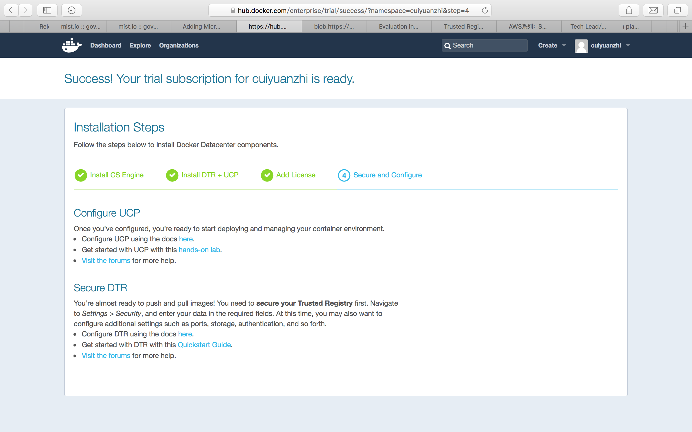
这里我就不多说了，大家直接参考官方文档吧。不配置，其实应该也是能用的。
最后，去UCP里头看了一圈，好像也没有啥特别，其实就是一个Docker Swarm的管理界面，可以部署容器，查看节点信息什么的。。。
对了，好像突然想起了什么事情，之前装了半天的DTR好像没有用上啊。。。这什么情况？？？
之后在UCP里找了一下，人家是可以配置自己的DTR的，如图：
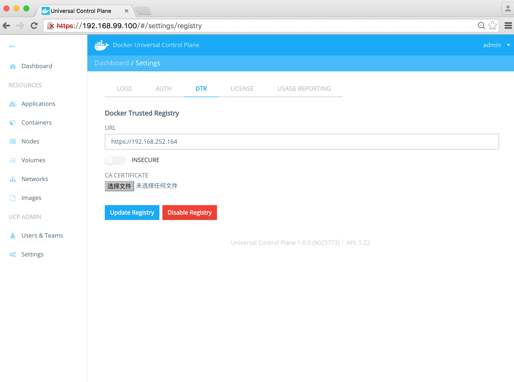
好了，这回你满意了吧。。。
至此，Docker DataCenter快速预览环境已经搭建完成了。其核心组建DTR、UCP都有哪些功能，还需要我们仔细挖掘。 可是不过，预览license的试用时间可是只有30天喔，动手记得要快～
崔远智
2016/3/1 01:17